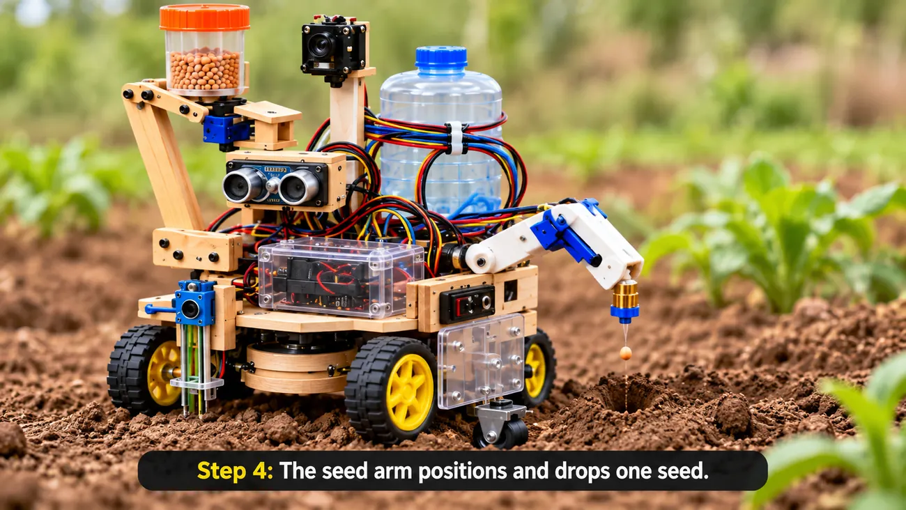
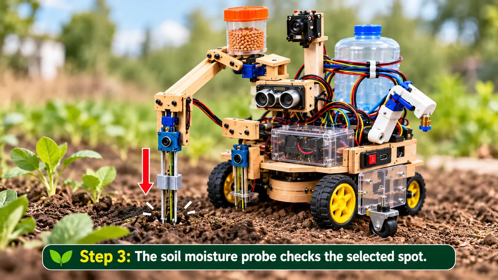
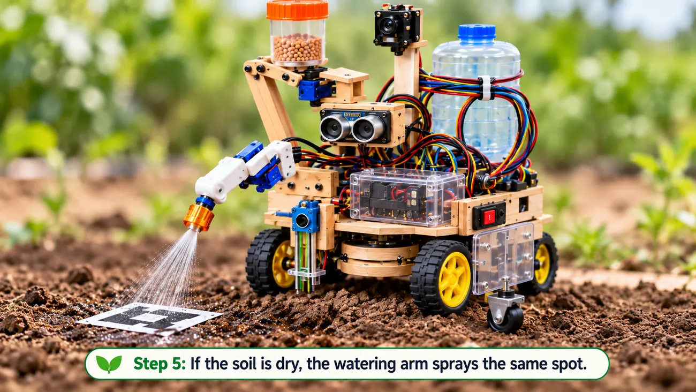
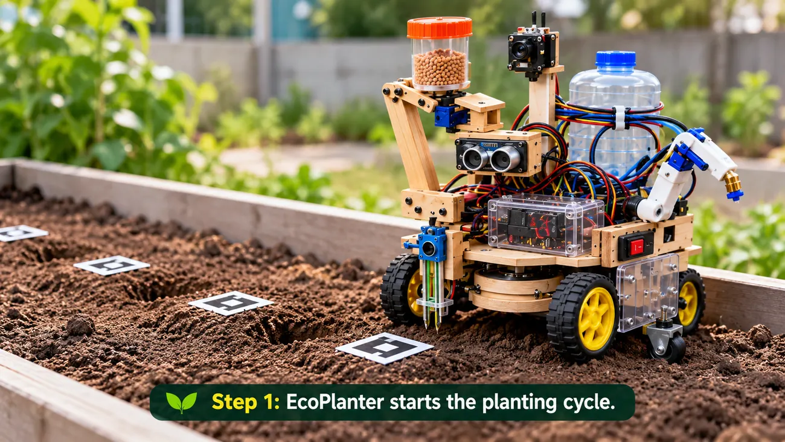

Precision seed dropping
A two-joint arm positions the dispenser above a calibrated planting spot and releases seeds.
Meet the features behind the EcoPlanter concept.

A two-joint arm positions the dispenser above a calibrated planting spot and releases seeds.

A guided, movable probe measures soil moisture before the watering decision.

A separate arm aims the nozzle at the tested spot, watering only when necessary.
Here is what's happening with your EcoPlanter today.
Planting area overview

Run your planting simulation
The robot is idle and waiting for a command.
Simulated sensor measurements over time
Latest actions and system events
Operate your prototype in Demo Mode or connect a compatible ESP32 controller.
Directional movement
Press and hold to drive. Release to stop. The robot must be in Manual Mode for hardware movement. On desktop, hold the arrow keys (↑ ↓ ← →) to drive.
Choose how EcoPlanter operates
Ready to follow the planting sequence.
2-joint seed dispenser
Targeted nozzle and 5V pump
Movable 2-DOF sensor assembly
ESP32-CAM interface
A history of simulated actions and planting activity.
Events generated by the website
| TIME | EVENT | DETAILS | SOURCE |
|---|
Adjust how EcoPlanter behaves and prepare a connection to ESP32.
Demo cycle configuration
Optional hardware integration
Your ESP32 firmware must implement the command and telemetry format in README.md. The example address is not a real connection.
Hardware control needs matching ESP32 firmware and failsafe logic. A website emergency stop is not a substitute for a physical stop switch.
Local simulation tools
Demo readings do not represent a real soil sample or live sensor.
A practical student robotics concept for accessible agricultural automation.
EcoPlanter combines a mobile chassis, calibrated seed placement, soil moisture checking, and targeted watering into one integrated design.
Move to the next target and align the tools using programmed positions or camera references.
Lower a guided moisture probe into the soil at a repeatable depth.
Position the two-joint seeder arm and release the selected number of seeds.
If the moisture reading is below the set threshold, aim the nozzle and run the pump.
Update command-based counts and record the planting-cycle outcome.
ESP32 controller, ESP32-CAM, servo-powered arms, capacitive soil sensor, mini pump, seed hopper, drive motors and a water-resistant plastic chassis.
This website includes a working demonstration interface, but the displayed images and simulated telemetry do not validate real-world planting accuracy, vision detection or moisture control.